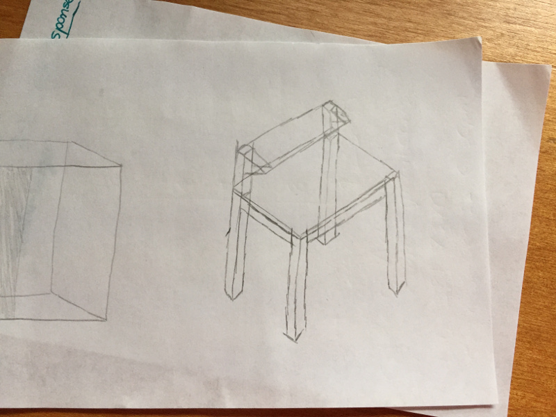

Wood Toolbench for Electronics Projects
Autodesk Inventor 2017 | PartWorks 3.0 | ShopBot Desktop Mill | Miter/Vertical/Table Saws
Completed as part of 4.140 (MIT Graduate-Level Class), October 2016

Spec'ing a toolbench
For this week's project, our motivation was to build something big. With the number of small projects that have come through in the last several weeks, the amount of trinkets and miscellaneous items that have accumulated on my main desk had started to get cumbersome. This desk was for papers and for problem sets - it seemed unsuited for circuit boards and 3D printed pieces. That's why for this week's project, I decided to make myself a dedicated toolbench for future HTMAA projects.
It was implied in lecture that we would have very limited/scarce time on the shopbot to mill things, so part of the motivation for building a toolbench was that it would allow me to spend more time on other tools like the miter saw and table saw. Additionally, building the toolbench out of constructive geometric pieces would give the structure better stability than if I relied on OSB and press-fitting alone.
I started off by imagining what a toolbench looked like and sketching out the features that I wanted. My specific design for a toolbench had three particular design decisions of note. (1) since I would be doing electronics primarily on this toolbench, the top surface had to be made of a non-conductive material that was also decently sturdy. It would also be excellent if that surface were smooth enough that I was able to write on paper on that surface without getting a very grainy result. It became clear after a little while that plywood or MDF would be the best surface. Though MDF is smoother, it also can be indented or "pulled up" more easily than plywood, so I choose to go with plywood.
Unfortunately plywood is expensive at Home Depot, especially if you buy the thicker kind. My compromise was to buy 1/4" plywood and back it with the 7/16" OSB from the shop. The resulting desktop material was about 3/4" thick and extremely sturdy. I chose a desktop resolution of 2' by 3' because by laying out a tape measure on my regular desk and measuring, I realized that that was about the size I needed for a toolbench for electronics. That size 2'x3' is also roughly the working area of my arms not accounting for having to reach for things.
Another design decision was (2) the structural material being made of 2"x3" kiln-dried whitewood boards. Originally, my thought was to use regular 2"x4" boards but I quickly realized the rectangular nature of these boards was bigger than I needed them to be for the scale of my workbench. Also, the 2x3s were quite a bit cheaper than the 2x4s ($2 vs $4) and they weren't as heavy meaning that transporting them would be easier.

The last major design decision was (3) the inclusion of the parts shelf and parts pockets. Good workbenches have a lot of test equipment at them - function generators, voltage supplies, oscilloscopes - and it is cumbersome to store the test equipment on the same level "workspace" as your electronics are stored. It was a no-brainer that a second shelf on the workbench would be necessary to hold this various test equipment.
The parts pockets is a concept that warrants a little more explanation. Oftentimes when working on circuit projects, you have a collection of small parts that you have to set aside briefly. There are special cups you can buy that can corral these miscellaneous working parts, but I wanted to go one step further. What if your desk could hold these parts for you? The benefits are tremendous - no more knocking the cup over onto the floor and spilling everything everywhere. The parts pockets would be screwed down into the desk and there would be no chance of accidentally knocking its contents off of the desk.
The first Autodesk Inventor model of the desk was extremely simplified. I wanted to get the desktop and four legs oriented before I worried about the specific geometry of the corners or the means of attaching one component to the other. From that point as a baseline, it was much easier to expand on the design and make more complicated interlocking pieces.
From there, developing the rest of the workbench was the process of making a bunch of parameterized components to fit together into the assembly. Not difficult - just mathematically curious as every corner involved the intersection of three "lines" each with a width and depth.
The part of this project that required the shopbot was the specialized parts pockets. This is a standard piece of 2x3 board that has been milled specifically to function as a pocket for any parts that are generated for the project on the workbench in the process of working. I made the design in Inventor and had two cut depths - one shallow cut to allow a "lip" on the edge of the compartment and one deeper cut to serve as the pocket.
Working in the shop
The majority of the cuts in order to get pieces down to size for the workbench were done using the miter saw. It's wonderful for doing straight cuts and the 2x3 board fit into the saw very nicely. Most of these cuts were done on Sunday when the Seahawks were playing the Falcons, hence my choice of clothing in the shop.
Turns out the maximum width of something that can be cut on the shopbot is 24 inches - my 33 inch piece that ran across the length of the workbench would not fit in the small shopbot and the large shopbot was constantly in use. My solution was to cut my 33 inch cross piece into a 31 inch cross piece. By removing one side of the shield on the shopbot, I was able to fit a 31 inch piece into a 24 inch cut area. The cuts could only be made in the 24 inch middle region of the 31 inch piece, but at least my piece was able to fit now.
Milling away the material to create the pockets was relatively straightforward - I loaded my file into VCarve and, after zeroing the machine on all 3 axis and setting a 1/4" end mill into the collet. I proceeded to run an air cut to test. The air cut looked okay and I stopped it after about a minute so I could switch to doing the real cut.
This particular whitewood material is rather dense and the shopbot made an extremely loud noise when cutting through. I had to get ear protection and provide it to everyone else in the shop at the time as well. The cutting spun up a lot of wood dust especially when cutting the deeper holes. The finished result looked really sleek.
To assemble the workbench, I first put together the desktop surface. I used a combination of 1 1/4" wood screws and 3 1/2" wood screwed also purchased from Home Depot.
Attaching the legs to the workbench proved difficult as I didn't have a rig to steady and allign the height of the legs. I improvised using a combination of the side of my bed and some leftover scrap pieces of wood from earlier cutting. Once three legs were attached and alligned, the fourth leg wasn't difficult at all.
The finished workbench includes the parts pocket at the very top of the work surface as well as the shelf made out of OSB on top. Hopefully the number of people needing to use the Shopbot goes down this week and I have a chance to mill out the second parts pocket support beam!
This week's project was wonderfully fun and I now have a workbench to build future weeks' electronics projects on.